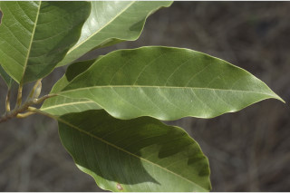
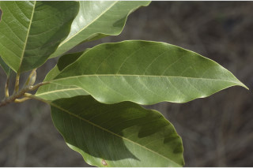

Botanical descriptions
ಸಸ್ಯದ ವೈಜ್ಞಾನಿಕ ವಿವರ
Botanical descriptions
மரங்களின் பண்புகள்
Habit
ಪ್ರಕೃತಿ
Habit
வளரியல்பு
Trees, buttressed, up to 30 m tall.
ಆನಿಕೆಗಳನ್ನೊಳಗೊಂಡ 30 ಮೀ. ವರೆಗೆ ಬೆಳೆಯುವ ಮರಗಳು.
വപ്രമൂലമുളള 30 മീറ്റര് വരെ ഉയരമുളള മരങ്ങള്.
மரங்கள், தாங்கு வேர்களுடையவை (பட்ரஸ்டு), 30 மீ. உயரம் வரை வளரக்கூடியது.
Trunk & Bark
ಕಾಂಡ ಮತ್ತು ತೊಗಟೆ
Trunk & Bark
தண்டு மற்றும் மரப்பட்டை
Bark grey, lenticellate; blaze cream with orange speckles.
ತೊಗಟೆ ಬೂದು ಬಣ್ಣ ಹೊಂದಿದ್ದು ವಾಯುವಿನಿಮಯ ಬೆಂಡು ರಂಧ್ರಗಳ ಸಮೇತವಿ -ರುತ್ತದೆ;ಕಚ್ಚು ಮಾಡಿದ ಜಾಗ ಕೆನೆ ಬಣ್ಣದಲ್ಲಿದ್ದು ಕಿತ್ತಳೆ ಬಣ್ಣದ ಮಚ್ಚೆಗಳನ್ನು ಹೊಂದಿರುತ್ತದೆ.
ശ്വസനരന്ധ്രങ്ങളുളള, നരച്ച നിറത്തിലുളള പുറംതൊലി; വെട്ട്പാടിന് ഓറഞ്ച് കുത്തുകളുളള ക്രീം നിറം.
மரத்தின் பட்டை சாம்பல் நிறமானது, லெண்டிசெல்லேட் உடையது; உள்பட்டை கிரீம் நிறமானது மற்றும் ஆரஞ்சு வண்ண புள்ளிகளுடையது.
Branches and Branchlets
ಕವಲುಗಳು ಮತ್ತು ಕಿರುಕೊಂಬೆಗಳು
Branches and Branchlets
கிளைகள் & சிறிய நுனிக்கிளைகள்
Branchlets terete with annular scars of caducous stipules, glabrous; apical bud covered by sericeous lanceolate stipules.
ಕಿರುಕೊಂಬೆಗಳು ದುಂಡಾಗಿರುತ್ತವೆ ಮತ್ತು ಉದುರಿದ ಕಾವಿನೆಲೆಗಳ ವಲಯಾಕಾರದ ಗುರುತುಗಳ ಸಮೇತವಿರುತ್ತವೆ ಹಾಗೂ ರೋಮರಹಿತವಾಗಿರುತ್ತವೆ;ಅಗ್ರದಲ್ಲಿನ ಅಂಕುರ ರೇಷ್ಮೆಯಂತಹ ಭರ್ಜಿಯಾಕಾರದ ಕಾವಿನೆಲೆಗಳಿಂದ ಸೂಕ್ಷ್ಮವಾದ ಮೃದು ತುಪ್ಪಳದಿಂದ ಮುಚ್ಚಿರುತ್ತವೆ.
അരോമിലമായ ഉരുണ്ട ഉപശാഖകള്. പെട്ടെന്ന് കൊഴിഞ്ഞ് വീഴുന്ന അനുപര്ണ്ണങ്ങളുടെ വാര്ഷിക അടയാളങ്ങളുളളതാണ്; അഗ്രമുകുളങ്ങള്, നീളന് സില്ക്ക് രോമങ്ങള് നിറഞ്ഞ, കുന്താകാരത്തിലുളള അനുപര്ണ്ണങ്ങളാല് ആവൃതമാണ്.
சிறிய நுனிக்கிளைகள் குறுக்குவெட்டுத் தோற்றத்தில் வளையமானது, இலையடிச்செதில் உதிர்ந்ததால் உண்டாகும் வட்டவடுக்களுடையது; தண்டின் நுனியிலுள்ள மொட்டுகளை மிக நுண்ணிய உரோமங்களுடைய ஈட்டி வடிவ செதில்கள் மூடியிருக்கும்.
Leaves
ಎಲೆಗಳು
Leaves
இலைகள்
Leaves simple, alternate, spiral; petiole 1-3 cm long, stout and planoconvex in cross section; lamina 9.5-25 x 3.5-9 cm, elliptic-lanceolate, apex acuminate with twisted acumen, base acute to attenuate, margin slightly undulate, glabrous, chartaceous; midrib nearly flat above; secondary_nerves 12-16 pairs; tertiary_nerves closely and strongly reticulate.
ಎಲೆಗಳು ಸರಳವಾಗಿದ್ದು, ಪರ್ಯಾಯ ಮತ್ತು ಸುತ್ತು ಜೋಡನಾ ವ್ಯವಸ್ಥೆಯ -ಲ್ಲಿರುತ್ತವೆ;ತೊಟ್ಟುಗಳು 1 ರಿಂದ 3 ಸೆಂಮೀ. ಉದ್ದವಿದ್ದು ದೃಢವಾಗಿರುತ್ತವೆ ಮತ್ತು ಅಡ್ಡ ಸೀಳಿದಾಗ ಸಪಾಟ ಪೀನ ಮಧ್ಯದ ಆಕಾರದಲ್ಲಿರುತ್ತವೆ;ಪತ್ರಗಳು 9.5-25 x 3.5 – 9 ಸೆಂ.ಮೀ ಗಾತ್ರ ಹೊಂದಿದ್ದು ಅಂಡವೃತ್ತ –ಭರ್ಜಿ ಆಕಾರದಲ್ಲಿರುತ್ತವೆ. ಪತ್ರಗಳು ತಿರುಚಿದ ಅಗ್ರವುಳ್ಳ ಕ್ರಮೇಣ ಚೂಪಾಗುವ ತುದಿಯನ್ನು ಹೊಂದಿರುತ್ತವೆ ಮತ್ತು ಚೂಪಾದುದರಿಂದ ಒಳಬಾಗಿದ ಬುಡ ಹೊಂದಿದ್ದು ರೋಮರಹಿತವಾಗಿರುತ್ತವೆ; ಅಂಚು ಸ್ವಲ್ಪ ಮಟ್ಟಿಗೆ ತರಂಗಿತವಾಗಿರುತ್ತದೆ;ಮೇಲ್ಮೈ ಕಾಗದವನ್ನೋಲುವ ಮಾದರಿಯಲ್ಲಿ -ರುತ್ತದೆ; ಮಧ್ಯನಾಳ ಪತ್ರದ ಮೇಲ್ಭಾಗದಲ್ಲಿ ಹೆಚ್ಚೂ ಕಡಿಮೆ ಚಪ್ಪಟೆಯಾಗಿರುತ್ತದೆ; ಎರಡನೇ ದರ್ಜೆಯ ನಾಳಗಳು 12 ರಿಂದ 16 ಜೋಡಿಗಳಿರುತ್ತವೆ; ಮೂರನೇ ದರ್ಜೆಯ ನಾಳಗಳು ಸನಿಹವಾಗಿದ್ದು ದೃಢವಾದ ಜಾಲಬಂಧ ನಾಳ ವಿನ್ಯಾಸದಲ್ಲಿರುತ್ತವೆ.
ലഘുവായ ഇലകള്, ഏകാന്തരക്രമത്തില്, സര്പ്പിളമായടുക്കിയതാണ്; ഛേദത്തില്, ഒരുഭാഗം പരന്നും മറുഭാഗം ഉരുണ്ടുമിരിക്കുന്ന ഘടനയുളള, ദൃഢമായ ഇലഞെട്ടിന് 1 സെ.മീ തൊട്ട് 3 സെ.മീ വരെ നീളം; പത്രഫലകത്തിന് 9.5 സെ.മീ തൊട്ട് 25 സെ.മീ വരെ നീളവും 3.5 സെ.മീ തൊട്ട് 9 സെ.മീ വരെ വീതിയും, ദീര്ഘവൃത്താകാര കുന്താകൃതിയുമാണ്, പത്രാഗ്രം പിരിഞ്ഞിരിക്കുന്ന വാലുളള ദീര്ഘാകാരമാണ്; പത്രാധാരം നിശിതം തൊട്ട് നേര്ത്തവസാനിക്കുന്നതുവരെയാവാം, അരികുകള് ലഘുവായി തരംഗിതമാണ്, അരോമിലം കടലാസ് പോലത്തെ പ്രകൃതം; മുഖ്യസിര മുകളില് ഏതാണ്ട് പരന്നിരിക്കുന്നതാണ്; 12 മുതല് 16 വരെ ജോഡി ദ്വിതീയ ഞരമ്പുകള്; ത്രിതീയ ഞരമ്പുകള്, അടുത്തും കനത്തില് ജാലിതമാണ്.
இலைகள் தனித்தவை, மாற்றுஅடுக்கமானவை, சுழல் போல் அமைந்தது; இலைக்காம்பு 2 செ.மீ. நீளமானது, தடித்தது மற்றும் குறுக்குவெட்டுத் தோற்றத்தில் பிளேனோகான்வக்ஸ்; இலை அலகு 9.5-25 x 3.5-9 செ.மீ., நீள்வட்டம் முதல் நீள்வட்ட-ஈட்டி வடிவானது, அலகின் நுனி அதிக்கூரியது மற்றும் முனை திருகியது, அலகின் தளம் கூரியது முதல் அட்டனுவேட், அலகின் விளிம்பு சிறிது அலைப்போன்றது, அலகின் இருபுறங்களும் உரோமங்களற்றது, சார்ட்டேசியஸ், மையநரம்பு மேற்பரப்பில் அலகின் பரப்பிற்கு சமமானது; இரண்டாம் நிலை நரம்புகள் 12-16 ஜோடிகளுடையது; மூன்றாம் நிலை நரம்புகள் நெருக்கமான வலைப்பின்னல் போன்றது.
Inflorescence / Flower
ಪುಷ್ಪಮಂಜರಿ/ಹೂಗಳು
Inflorescence / Flower
மஞ்சரி / மலர்கள்
Flowers solitary, axillary, large, yellow, fragrant.
ಹೂಗಳು ದೊಡ್ಡದಾಗಿದ್ದು,ಹಳದಿ ಬಣ್ಣ ಹೊಂದಿದ್ದು ಅಕ್ಷಾಕಂಕುಳಿನಲ್ಲಿ ಒಂಟಿಯಾಗಿ -ರುತ್ತವೆ ಮತ್ತು ಸುವಾಸನೆಯಿಂದ ಕೂಡಿರುತ್ತವೆ.
സൂഗന്ധമുളള വലിയ മഞ്ഞപ്പൂക്കള്, ഒറ്റയായി കക്ഷങ്ങളിലുണ്ടാകുന്നു.
மலர்கள் தனித்தது, இலைக்கோணங்களில் காணப்படுவது, பெரியவை, மஞ்சள் நிறமானவை, நறுமணமுடையது.
Fruit and Seed
ಕಾಯಿ /ಬೀಜ
Fruit and Seed
கனி / விதை
Follicles, warty, 2-3 cm long, arranged as spike, dehiscing dorsally; seed 1, scarlet.
ಕಾಯಿಗಳು ಫಾಲಿಕಲ್ ಮಾದರಿಯಲ್ಲಿದ್ದು ಗಂತಿಗಳನ್ನು ಹೊಂದಿರುತ್ತವೆ ಮತ್ತು 2 ರಿಂದ 3 ಸೆಂ.ಮೀ ಉದ್ದವಿರುತ್ತವೆ ಮತ್ತು ಕದಿರುಮಂಜರಿಯ ಹಾಗೆ ಜೋಡಣೆಗೊಂಡಿರುತ್ತವೆ; ಫಾಲಿಕಲ್ಗಳು ಬೆನ್ನಿನ ಬಳಿ ಬಿರಿಯುತ್ತವೆ;ಬೀಜ 1 ದ್ದು ಕಡುಗೆಂಪು ಬಣ್ಣ ಹೊಂದಿರುತ್ತದೆ.
കടും ചുവപ്പുനിറമുള്ള, ഒറ്റ വിത്തുള്ള കായ, സ്പൈക്കായി അടുക്കിയിരിക്കുന്ന, പുറം ഭാഗത്തുകൂടി പൊട്ടുന്ന, 2 സെ.മി. മുതല് 3 സെ. മി. വരെ വീതിയുള്ള നിറഞ്ഞ ഫോളിക്കുകളാണ്.
பாலிக்கிள், சொரசொரப்பானது, 2-3 செ.மீ., நீளமானது, காம்புகளற்றவை, ஸ்பைக்கிலமைந்தவை, கனி பின்புறத்தில் வெடிக்கக்கூடியது; விதை ஒன்று, கருஞ்சிவப்பு நிறமானது.
Literatures
ಗ್ರಂಥ ಸೂಚಿ
Literatures
சான்று ஏடு
Linnaeus, Sp. Pl. 536. 1753; Gamble, Fl. Madras 1: 9. 1997 (re. ed); Saldanha, Fl. Karnataka 1: 37. 1984; Sasidharan, Biodiversity documentation for Kerala- Flowering Plants, part 6: 15. 2004.
Linnaeus, Sp.Pl. 536.1753;Gamble,Fl.Madras 1:9. 1993(rep.ed.); Saldanha, Fl. Karnataka 1:37.1984; Sasidharan, Biodiversity documentation for Kerala Plants, part 6, 15.2004.
Linnaeus, Sp. Pl. 536. 1753; Gamble, Fl. Madras 1: 9. 1997 (re. ed); Saldanha, Fl. Karnataka 1: 37. 1984; Sasidharan, Biodiversity documentation for Kerala- Flowering Plants, part 6: 15. 2004.
Linnaeus, Sp. Pl. 536. 1753; Gamble, Fl. Madras 1: 9. 1997 (re. ed); Saldanha, Fl. Karnataka 1: 37. 1984; Sasidharan, Biodiversity documentation for Kerala- Flowering Plants, part 6: 15. 2004.


 
